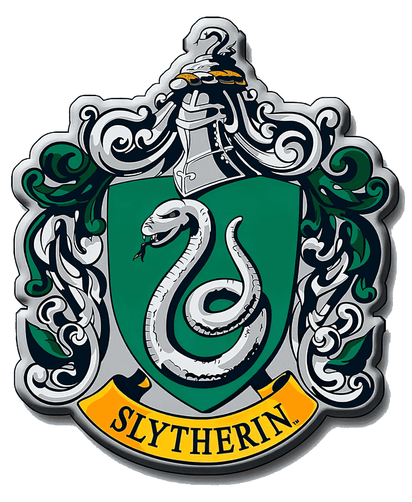

⮪ INICIO
SLYTHERIN
La casa de slytherin fue fundada por Salazar Slytherin. Los
colores de esta casa son el verde y el plateado, y el símbolo es una serpiente; su reliquia
es el guardapelo de Salazar Slytherin. Los jefes de la casa son Severus Snaoe y
Horace Slughorn y su fantasma asociado es el Barón Sanguinario.
En esta casa
solo se aceptan a los estudiantes que tienen entre sus cualidades
la ambición, la astucia y muchas veces la frialdad (la mayoria de estudiantes
son ambiciosos de poder y son de sangre pura, teniendo la idea en donde solo ellos son
merecedores de ser brujas o magos).